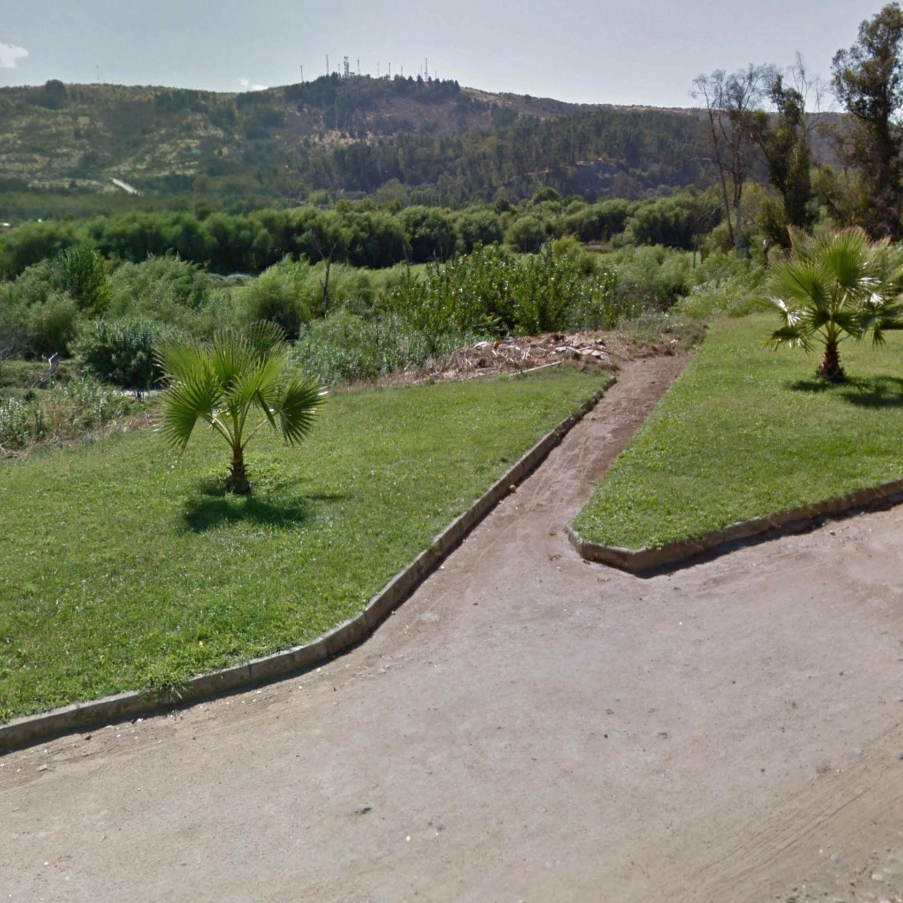
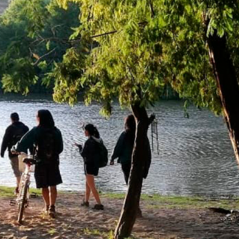
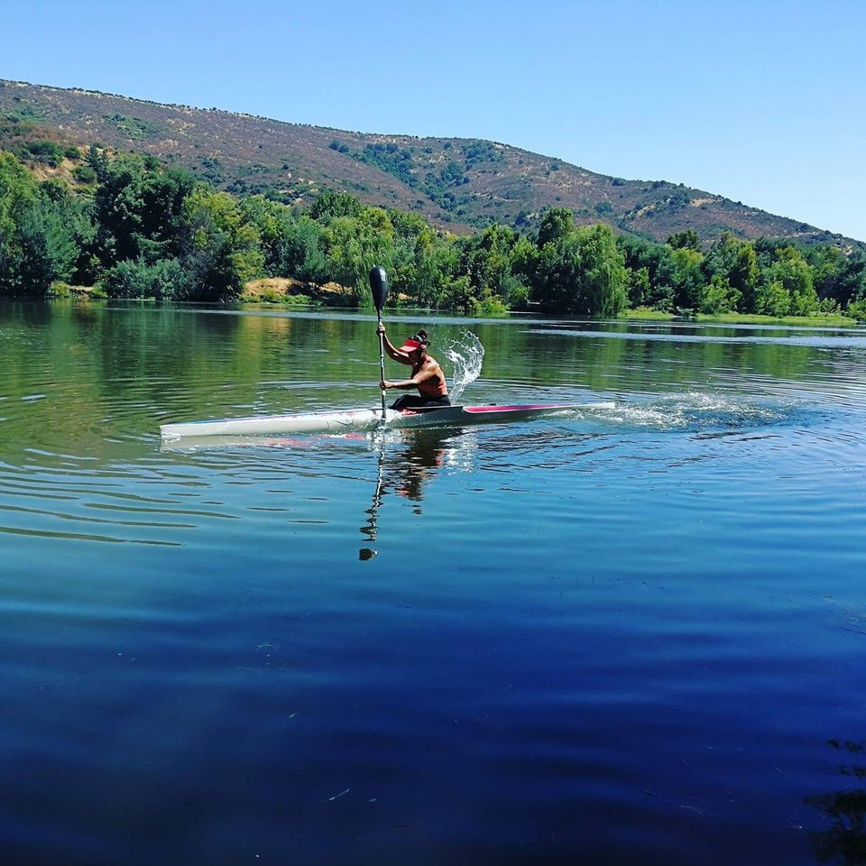
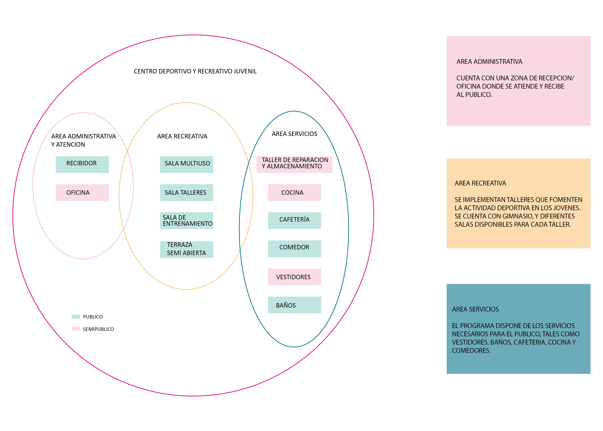

Propuesta programatica y fundamentacion

El proyecto se emplaza en el borde del barrio, con el
objetivo de vincularse a la plaza, intensificando el punto
de encuentro.

Ante la existencia de fauna nativa en el borde, los
jovenes realizan actividades ecologicas.

Se busca activar los deportes más proximos a la zona
tales como canotaje y mtb

Javiera Contreras
Talca, Chile.